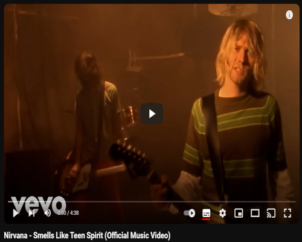

Nirvana foi uma banda norte-americana de rock formada pelo vocalista e guitarrista Kurt Cobain e pelo baixista Krist Novoselic em Aberdeen no ano de 1987, que obteve grande sucesso no movimento grunge de Seattle no início dos anos 1990. Vários bateristas passaram pelo Nirvana, sendo o que ficou mais tempo na banda foi Dave Grohl, que entrou em 1990.
No final da década de 1980 o Nirvana se estabeleceu como parte da cena grunge de Seattle, lançando o seu primeiro álbum, Bleach, pela gravadora independente Sub Pop em 1989. A banda desenvolveu um som que se baseava em contrastes dinâmicos, muitas vezes entre versos calmos e barulhentos, e refrões pesados. Depois de assinar com a gravadora DGC Records, o grupo encontrou o sucesso inesperado com "Smells Like Teen Spirit", o primeiro single do segundo álbum da banda, Nevermind (1991). O sucesso repentino da banda amplamente popularizou o rock alternativo como um todo, e como o vocalista da banda, Cobain se encontrou referido na mídia como o "porta-voz de uma geração", com o Nirvana sendo considerado a "principal banda" da Geração X. Nevermind é citado como um dos melhores álbuns de todos os tempos, e contém três singles na lista de "500 Maiores Canções de Todos os Tempos", da revista Rolling Stone. O terceiro álbum de estúdio do Nirvana, In Utero (1993), desafiou a audiência do grupo, apresentando um som abrasivo, natural e cru, menos mainstream. In Utero, apesar de ser um álbum que se volta contra o sistema (fama e mídia), também foi muito bem sucedido, surpreendendo a crítica, os produtores, e até mesmo a própria gravadora.
A breve vida do Nirvana terminou após a morte de Kurt Cobain em 1994, mas vários lançamentos póstumos têm sido emitidos desde então, supervisionados por Novoselic, Dave Grohl e pela viúva de Cobain, Courtney Love. Apesar de ter lançado apenas três álbuns, a banda, desde o disco de estreia, já vendeu mais de 75 milhões de cópias em todo o mundo. Destas, 25 milhões foram vendidas apenas nos Estados Unidos.
Clique na imagem abaixo para assitir a playlist de clipes do Nirvana no Youtube.
